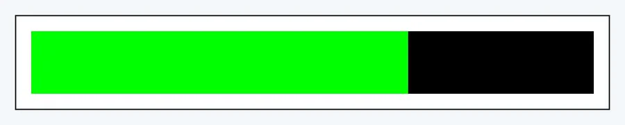
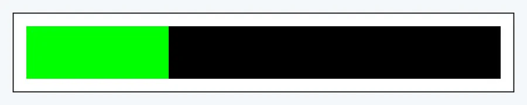
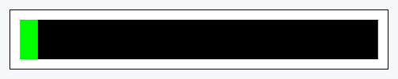

Elecciones 2021 | Generales
2021 > Generales > Provisorio > Senadores/as Nacionales > Corrientes
Mesas computadas
2.586
Electores
876.580
Participacion sobre el escrutado
2.586
| ECO + VAMOS CORRIENTES |  | 58.98% 320.678 Votos |
| FRENTE DE TODOS |  | 36.54% 198.772 Votos |
| VAMOS CON VOS |  | 2.51% 13632 Votos |
| COMPROMISO FEDERAL | 1.98% 10750 Votos |